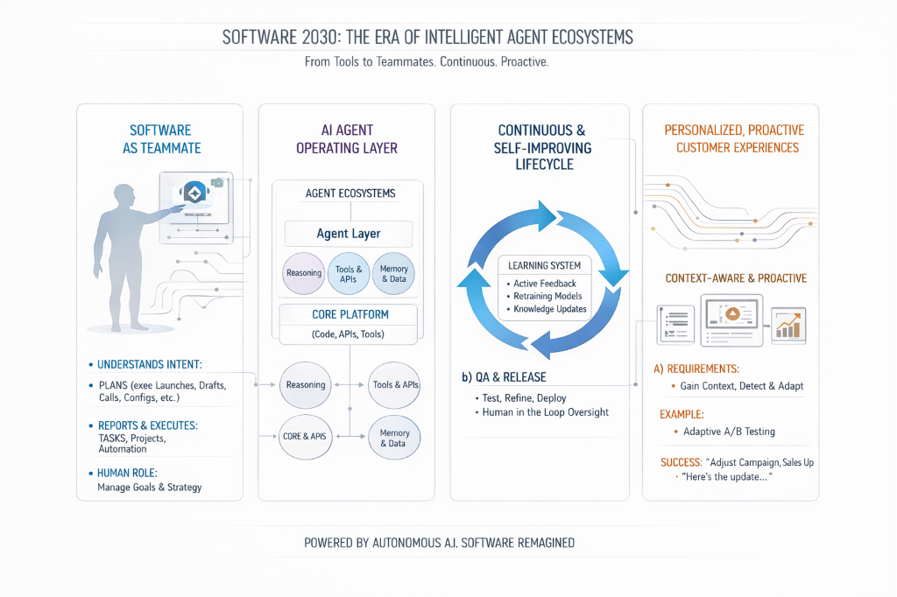
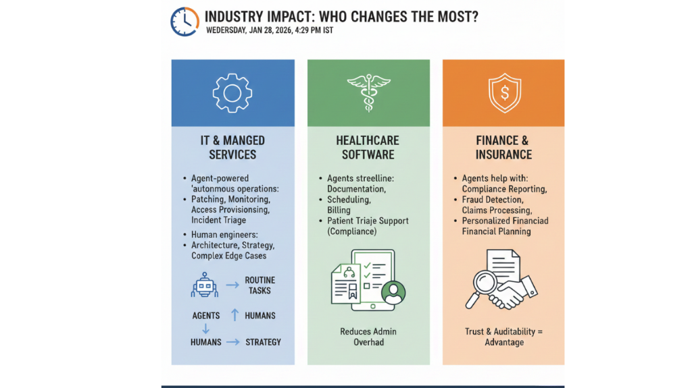

Quantum Leap: AI Agents Will Change How Software Services Work in 2030

In 2030, software services won't just do what you ask them to; they'll also be able to guess what you need, make decisions, and get better all the time. The transformation is caused by AI agents. These systems can work by themselves or with a little help from people. They can figure out what they want to do, develop plans, use tools, work with other agents, and get things done with very little help from people. This isn't just "Smarter Chatbots". It's a big change in how software is made, used, and experienced. Cloud computing made infrastructure an on-demand utility. Now, AI agents are making software tasks, from coding to customer service to security operations, an on-demand, smart service.
1) From “Software as a Tool” to “Software as a Teammate”
Traditional software is mostly static: developers ship features, users click buttons, and updates arrive in cycles. AI agents change that relationship. In 2030, a software service behaves more like a capable teammate:
- It understands intent (“launch a new pricing plan for SMB customers”) rather than requiring step-by-step instructions.
- It plans (drafts the plan, checks constraints, simulates outcomes).
- It executes (configures systems, writes code, updates docs, routes approvals).
- It reports back with reasoning, risks, and what it changed.
This doesn’t mean humans disappear. It means humans move up the value chain-from managing tasks to managing goals, boundaries, and strategy.
2) AI agents as the next "operating layer" for services
By 2030, many software platforms will have a "agent layer," just like present apps have billing, authentication, and analytics. This layer usually has:
- Orchestrator agents send requests, pick tools, and give specialist agents smaller jobs.
- Specialist agents do targeted activities like coding, quality assurance, security analysis, user research, data modeling, and performance tuning.
- Governance agents make sure that policies are followed, such as restrictions about privacy, cost limits, and risk levels.
- Audit and observability agents keep track of what happened and why, providing records and explanations that may be followed.

3) The software development lifecycle keeps going and gets better on its own.
Software teams still decide the direction of products in 2030, but bots speed up the whole process:
a) Design and requirements
Structured specs, user stories, API contracts, UX flows, and acceptance criteria are what agents turn rough ideas into. They can also pretend to be users to find cases that are missing.
b) Implementation
Agents write code, test it, refactor it, and make sure that implementations are in line with design standards. People make important choices about things like who owns the data, how it can fail, how secure it is, and how easy it is to maintain in the long run.
c) Test and release
Agent-driven testing includes more accurate and fake users, inputs that are meant to hurt, flows between devices, and performance scenarios. When agents can find risk trends and suggest staged rollouts, releases are safer.
There is no longer a "build → deploy → maintain" pipeline. Instead, there is a "living system" that is always learning and getting better, but it has to stay within tight limits.
4) Reactive and personalized customer experiences
In the year 2030, software services will be responsive and "context-aware." Agents find conflict early, instead of waiting for users to complain:
A CRM agent sees that conversion rates have gone down and suggests that the plan be changed.
5) Industry Impact: Who Changes the Most?
While nearly every sector benefits, a few see dramatic shifts:
IT & Managed Services
Agent-powered “autonomous operations” handle routine tasks: patching, monitoring, access provisioning, and incident triage. Human engineers focus on architecture, strategy, and complex edge cases.
Healthcare software
Agents streamline documentation, scheduling, billing workflows, and patient triage support (with careful compliance controls). The biggest value comes from reducing administrative overhead—without compromising safety.
Finance & Insurance
Agents help with compliance reporting, fraud detection workflows, claims processing, and personalized financial planning. Trust and auditability become decisive competitive advantages.

Conclusion
"Quantum Leap" isn't just a cool phrase. By 2030, AI agents will have changed the way software services work in a big way. They will evolve from being passive tools to active collaborators, from needing to be maintained by hand to being able to improve themselves, and from providing generic experiences to profoundly tailored, goal-driven outcomes. But this future won't happen on its own. The same freedom that lets you go fast and big also brings dangers to security, privacy, and accountability. Companies that do well will be the ones who combine agent intelligence with strong governance, such as clear authorization, thorough testing, open audit trails, and human oversight for important choices.